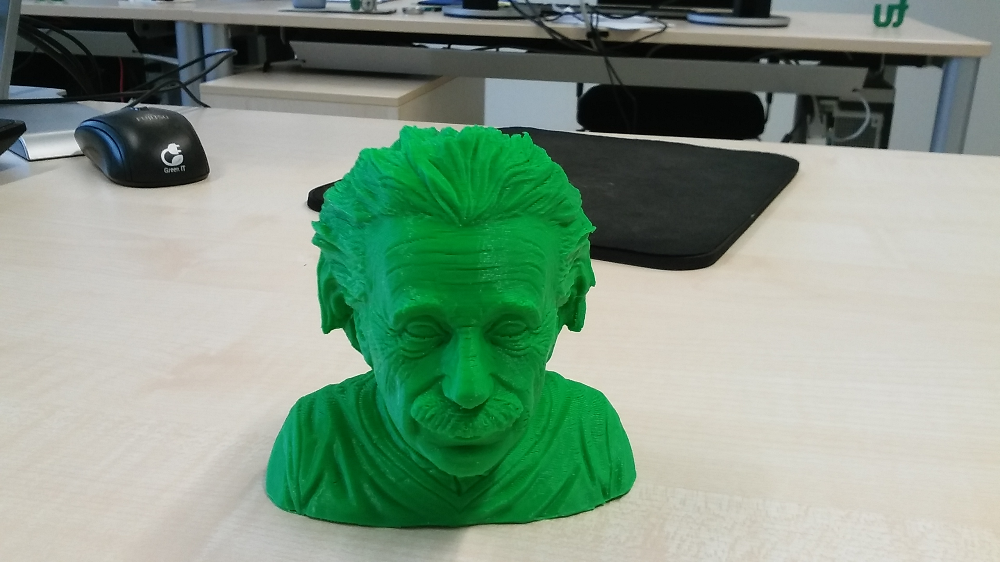
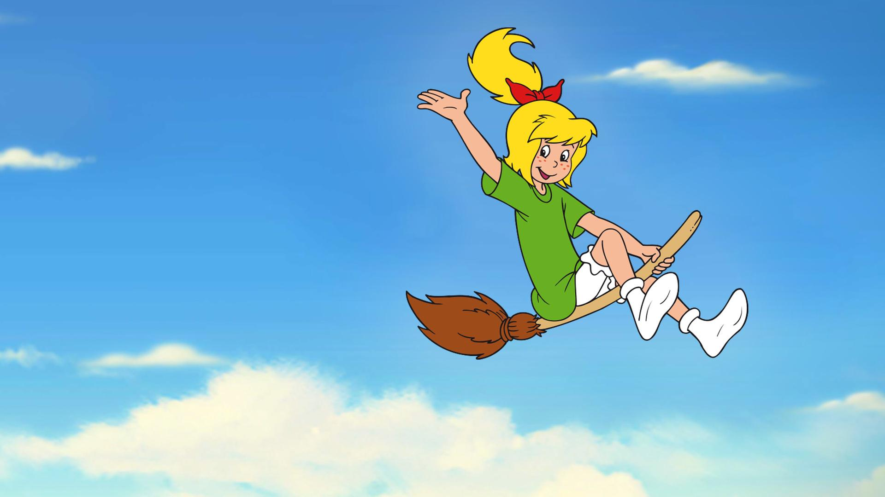
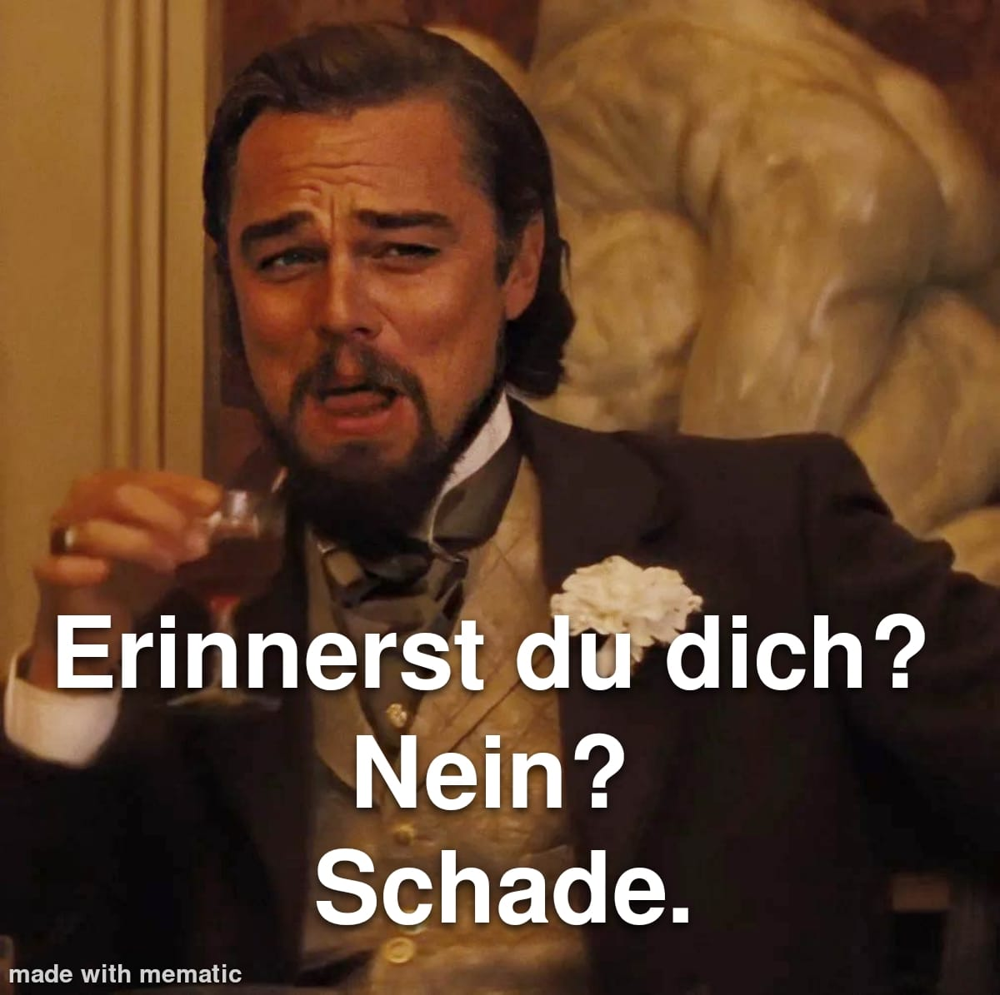
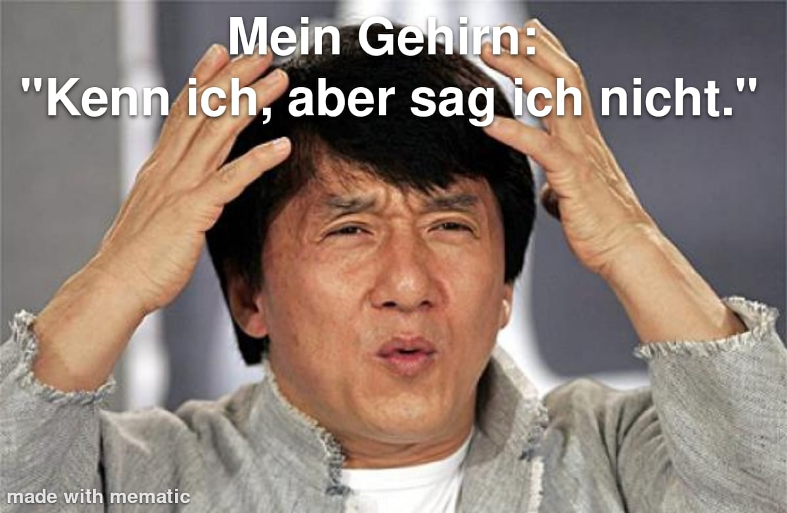
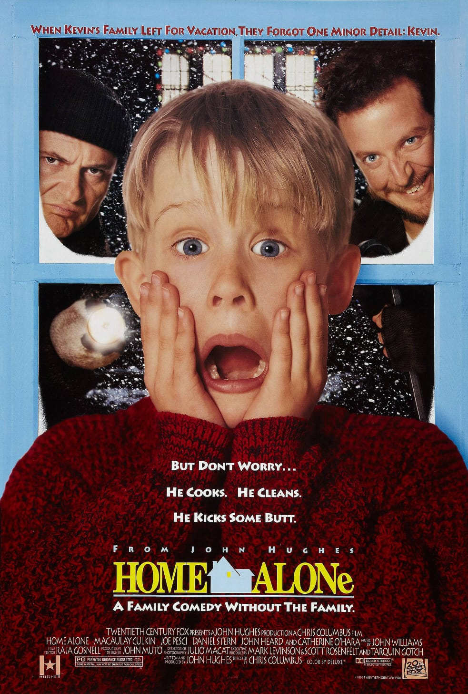
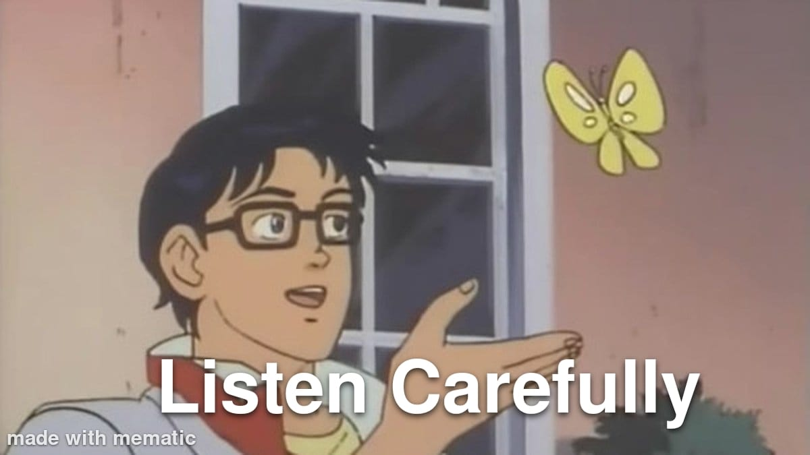
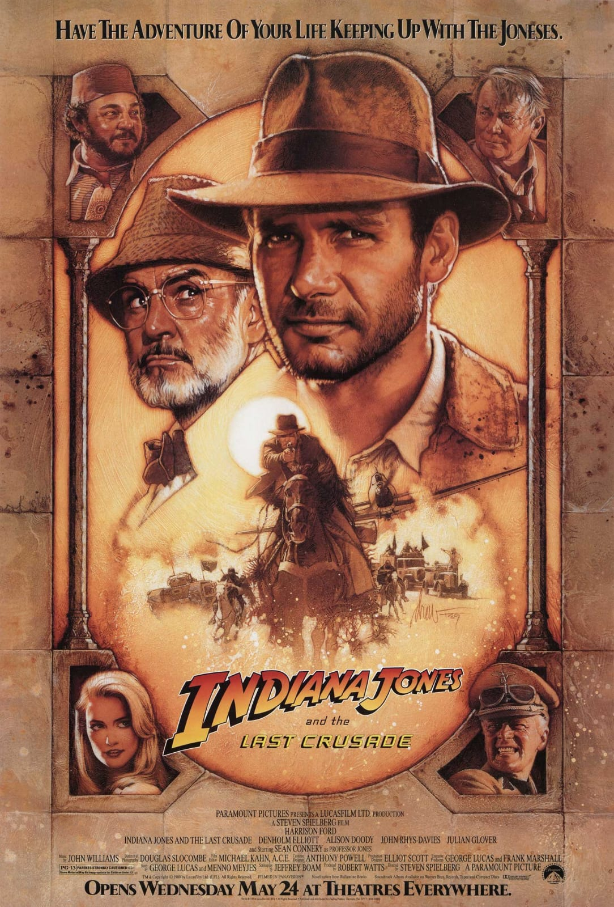
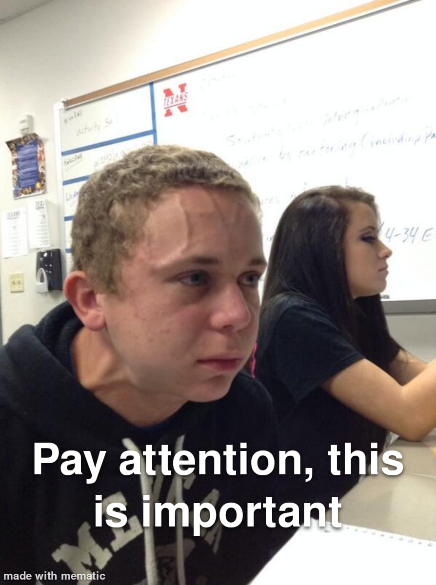
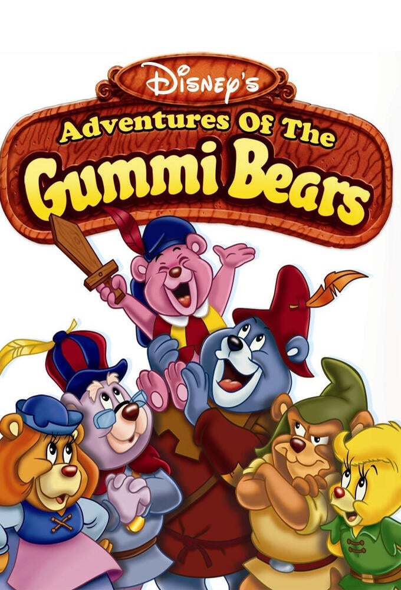
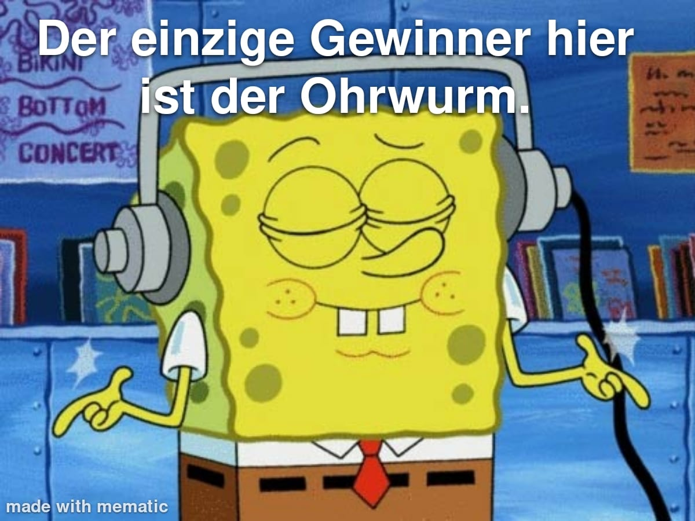

Profs:
0
Studis:
0
Beat your
Prof '25
jDPG Regionalgruppe Dortmund
Wir suchen neue Mitglieder!Kontakt: dortmund@jdpg.de und dortmund.jdpg.de
Der Preis
Die Ehre und ...

der TU-Grüne Einstein
der TU-Grüne Einstein
Die Prüfungsordnung
-
Disziplinen:
Herausforderungen 1 Punkt Finale 2 Punkte - Bei den Spielen treten 2 Studierende an
- Diese werden aus dem Publikum gewählt
|
|
Herausforderung 1
Emoji-Laborchaos
1 Punkt
Regeln
- Es werden Bilder von Emojis gezeigt, welche einen Praktikumsversuch darstellen
- Ziel: Erraten, welcher Praktikumsversuch dargestellt wird
- Glaubt ein Team den Song zu erkennen, ruft es "Stopp"
- Richtige Antwort → 1 Punkt
- Falsche Antwort → Das andere Team darf raten
- Das Team mit den meisten Spielpunkten gewinnt Herausforderung
Es folgt ein Beispiel
Affenschuss
Herausforderung 1
Emoji-Laborchaos
1 Punkt
00:30
Kugelfallviskosimeter
00:30
Verdampfungswärme
00:30
Trägheitsmoment
00:30
Dopplereffekt
Kurze Werbeunterbrechung
00:30
Fotoeffekt
00:30
Reichweite von Alphastrahlung
00:30
Milikan Effekt
Ergebnis
|
|
Herausforderung 2
Lost in Lyrics
1 Punkt
Regeln
- Es wird gleichzeitig gespielt
- Es werden nach und nach Songzeilen in einer übersetzten Sprache vorgelesen
- Zuerst wird die erste Strophe/ das Intro aufgedeckt, anschließend der Refrain
- Glaubt ein Team den Song zu erkennen, ruft es "Stopp"
- Richtige Antwort → 1 Punkt
- Falsche Antwort → Das andere Team darf raten
Es folgt ein Beispiel
-
Früher regierte ich die Welt
Die Meere stiegen an, wenn ich es befahl
Jetzt schlafe ich morgens allein
Kehre die Straßen, die mir früher gehörten -
Ich höre die Glocken Jerusalems läuten
Römische Kavalleriechöre singen
Sei mein Spiegel, mein Schild und Schwert
Meine Missionare auf fremdem Boden
„Viva La Vida - Coldplay “
Herausforderung ...
Lost in Lyrics
1 Punkt
-
Heute Abend werde ich mich richtig gut amüsieren
Ich fühle mich lebendig
Und die Welt werde ich auf den Kopf stellen
Und in Ekstase schweben -
Halt mich jetzt nicht auf
Ich habe so eine gute Zeit. Ich habe Spaß
Halt mich jetzt nicht auf, wenn du eine gute Zeit haben willst rufen Sie mich einfach an
Halt mich jetzt nicht auf, denn ich habe eine gute Zeit
Halt mich jetzt nicht auf Ja, ich habe eine gute Zeit
Ich will überhaupt nicht aufhören, ja
„Don't stop me now - Queen “
-
Die Uhr schlägt zur vollen Stunde
und die Sonne beginnt unterzugehen
Immer noch genug Zeit herauszufinden
wie ich meine Jagt verschwinden zu lassen
Ich habe es richtig gemacht bis jetzt
Es ist das Tageslicht das mir zeigt wie
und wenn die Nacht beginnt ruft die Einsamkeit
-
Oh! ich will mit jemanden tanzen
ich will die hitze mit jemanden spüren
Yeah! ich will mit jemanden tanzen
mit jemanden der mich liebt
„I Wanna Dance With Somebody (Who Loves Me) - Whitney Houston “
-
Sie war mehr wie eine Schönheitskönigin aus einem Film
Ich sagte: von mir aus. Aber was meinst du damit, dass ich derjenige bin,
der auf dem Parkett in der Runde tanzen wird
Sie sagte, ich sei es, der auf dem Parkett in der Runde tanzen wird -
Billie Jean ist nicht meine Geliebte
Sie ist nur ein Mädchen, das behauptet ich sei es
Aber das Kind ist nicht mein Sohn
Sie sagt, ich sei derjenige, aber das Kind ist nicht mein Sohn
„Billie Jean - Michael Jackson “
-
Es war einmal,
vor noch gar nicht allzulanger Zeit - -
Wir sind fast da,
leben von einem Gebet.
Nimm meine Hand, wir schaffen es, ich schwör's!
Oh, leben von einem Gebet.
„Livin’ on a Prayer - Bon Jovi “
-
Who will freeze us this moment? /
It couldn't be better
Think of the days behind us
How long we're sharing joy and tears
Everyone's walking through fire for one another
We'll never leave eachother alone in the rain
And as long as our hearts guide us
It'll always stay like that -
A cheer for us (us) /
For this life /
For this moment
That will always remain
A cheer for us (us) / For now and forever / For a day of infinity
„Auf uns - Andreas Bourani “
Ergebnis
|
|
Herausforderung 3
AI Bilder Raten
1 Punkt
Regeln
- Ein künstlich erstelltes Bild wird gezeigt
- Ziel: Den Eingabebegriff erraten, mit dem das Bild erstellt wurde
- Es gibt 3 Antwortmöglichkeiten
- Antworten werden an die Tafel geschrieben
- Das Team mit den meisten Spielpunkten gewinnt Herausforderung
Es folgt ein Beispiel
Herausforderung 3
AI Bilder Raten
1 Punkt
Ergebnis
|
|
Herausforderung 4
Wer bin ich?
1 Punkt
Regeln
- Jedem Team wird eine Person zugeteilt
- Beide Teams müssen mittels ja und nein Fragen erraten, welche Person sie sind
- Die Fragen werden vom Puplikum beantwortet
- Wer zuerst die eigene Person errät gewinnt die Runde
- Die zu erratenen Personen werden nacheinander in der Präsentation gezeigt
- Das Team mit den meisten Spielpunkten gewinnt Herausforderung
Es folgt ein Beispiel
Dr. Debus
Störmer-Zöhl
Herausforderung 4
Wer bin ich?
1 Punkt

Bibi Blocksberg
Herry Potter
Bonusfrage
1 Punkt
Was ist Bibis richtiger Name?
Brigitte
Stephen Hawking
Albert Einstein
Taylor Swift
Angela Merkel
Sheldon Cooper
Sherlock Holmes
|
|
15:00 min. Pause
|
|
Herausforderung 5
Wii Party
1 Punkt
Regeln
- Es werden drei Runden gespielt
- Runde 1: Timber Topple
- Runde 2: Jangle Wranglers
- Runde 3: Flag Footrace
- Für jede gewonnene Runde gibt es einen Spielpunkt
|
|
Herausforderung 6
IntroMania
1 Punkt
Regeln
- Eine Film bzw. Serien Titelmusik wird gezeigt
- Ziel: Es muss anhand des Introsongs der Name der Serie/ des Filmes erraten werden
- Glaubt ein Team den Song zu erkennen, ruft es "Stopp"
- Richtige Antwort → 1 Punkt
- Falsche Antwort → Das andere Team darf raten
- Das Team mit den meisten Spielpunkten gewinnt Herausforderung
Es folgt ein Beispiel
Beispiel
Titanic
Herausforderung 6
IntroMania
1 Punkt
1. Song
HEIDI
2. Song
Die Chroniken von Narnia

3. Song
Home Alone
4. Song
Indiana Jones
5. Song
Die Gummibären
Ergebnis
Aber beachte:

|
|
Herausforderung 7
Powerpoint Karaoke
1 Punkt
Regeln
- Jedem Team wird eine Präsentation zugeteilt
- Die Präsentation wurden mit der einer KI erstellt
- Passend zu den Wahlen müssen beide Teams versuchen, den Hörsaal von der Präsentation zu überzeugen
- Jeses Team sieht die Präsentation während dem Vortrag zum ersten mal
- Der Hörsaal entscheidet mittels Handzeichen, wer Präsentation überzeugender Vorgetragen wurde
- Das Team mit den meisten Handzeichen gewinnt Herausforderung
Herausforderung 8
Wer wird Milionär?
1 Punkt
| a) | Einer Elle |
| b) | Einem Joule |
| c) | Einer Dioptrie |
| d) | Einem Grad Kelvin |
| a) | Einer Elle |
| b) | Einem Joule |
| c) | Einer Dioptrie |
| d) | Einem Grad Kelvin |
| a) | Die Tür wechseln |
| b) | Bei der ersten Wahl bleiben |
| c) | Es macht keinen Unterschied |
| d) | Die dritte Tür öffnen |
| a) | Die Tür wechseln |
| b) | Bei der ersten Wahl bleiben |
| c) | Es macht keinen Unterschied |
| d) | Die dritte Tür öffnen |
| a) | Isothermer Prozess |
| b) | Adiabatischer Prozess |
| c) | Isochorer Prozess |
| d) | Isobarer Prozess |
| a) | Isothermer Prozess |
| b) | Adiabatischer Prozess |
| c) | Isochorer Prozess |
| d) | Isobarer Prozess |
|
|